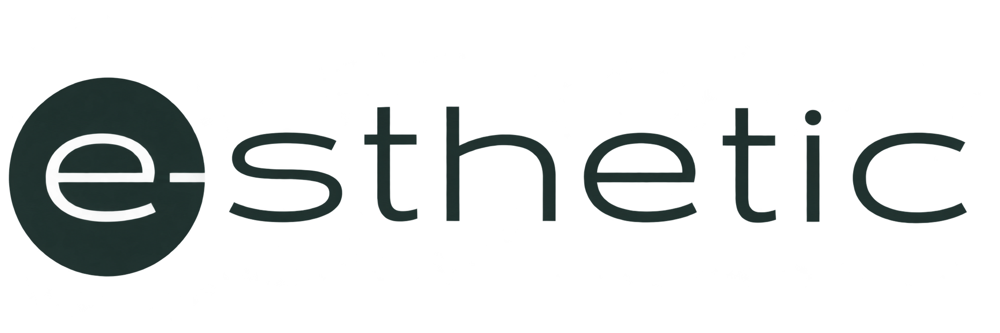
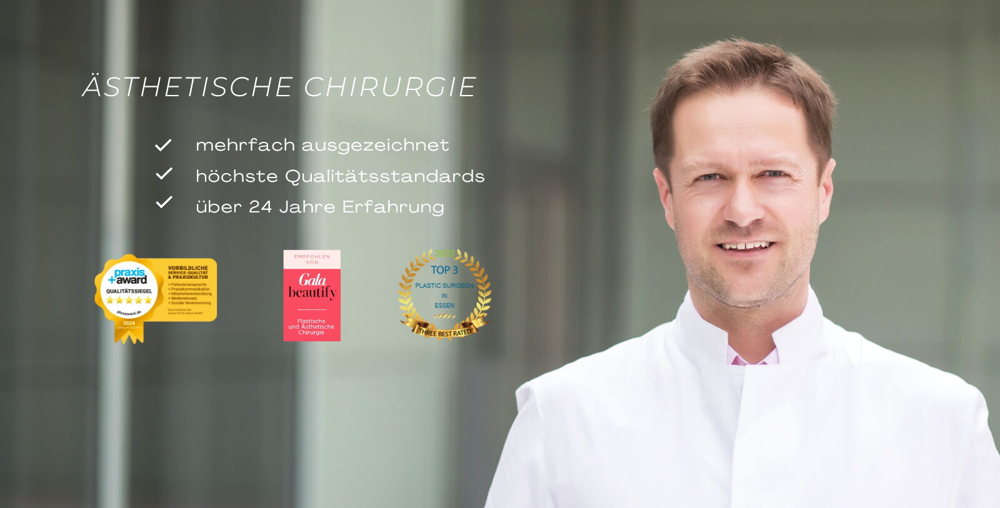
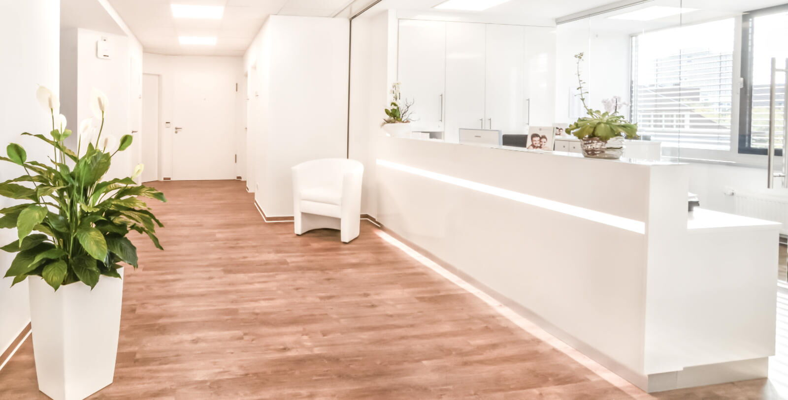

Zuhören & verstehen
Wir sprechen über Ihre Wünsche, beantworten Ihre Fragen und nehmen uns Zeit für Ihre persönliche Beratung.

PRIVATKLINIK · ESSEN Beratung vereinbarenEs geht um mehr als Ästhetik. Es geht um Ihr Wohlgefühl. Wir begleiten Sie mit Erfahrung, Feingefühl und einem Blick für Ihre natürliche Schönheit.
Ihre persönliche Beratung Behandlungen entdeckenJeder Mensch hat seine eigene Vorstellung von Schönheit. Wir hören zu, nehmen uns Zeit und sprechen offen darüber, was möglich und sinnvoll ist.
In unserer Privatklinik in Essen verbinden wir Plastische und Ästhetische Chirurgie mit einer persönlichen Begleitung. Für eine Entscheidung, die sich für Sie richtig anfühlt.
Lernen Sie uns kennenEntdecken Sie unsere Behandlungsschwerpunkte.
Den richtigen Weg finden wir gemeinsam.

Persönliche Beratung. Medizinische Präzision. Ein gutes Gefühl.
Dr. med. Daniel Talanow ist Facharzt für Plastische und Ästhetische Chirurgie und leitet die e-sthetic Privatklinik. Er begleitet Sie persönlich – vom ersten Gespräch über die Behandlung bis zur Nachsorge.
Wir sind an Ihrer Seite.
In jedem Schritt Ihrer Behandlung.
Wir sprechen über Ihre Wünsche, beantworten Ihre Fragen und nehmen uns Zeit für Ihre persönliche Beratung.
Sie erhalten eine individuelle Einschätzung zu Möglichkeiten, Ablauf und Risiken. Sie entscheiden in Ruhe.
Behandlung und Nachsorge finden in unserer Privatklinik statt. Ihr Ansprechpartner bleibt an Ihrer Seite.
Helle Räume, ein aufmerksames Team und Zeit für das Wesentliche: Sie. Unsere staatlich anerkannte Privatklinik im Herzen von Essen bietet den Rahmen für Ihre persönliche Behandlung.
Einblicke in die Klinik
Der erste Schritt darf sich leicht anfühlen.
Wir helfen Ihnen gerne weiter.
Buchen Sie Ihren Wunschtermin über unsere Online-Terminbuchung oder rufen Sie uns unter +49 201 857 879 80 an. Unser Team ist montags bis freitags von 9 bis 18 Uhr erreichbar.
Dr. Talanow bespricht mit Ihnen Ihre Wünsche und die medizinischen Möglichkeiten. Sie erhalten eine persönliche Einschätzung sowie Informationen zu Ablauf, Risiken und Nachsorge. Bringen Sie gerne Ihre Fragen mit.
Ja. Beratung, Behandlung, Operation und Nachsorge finden direkt in unserer staatlich anerkannten Privatklinik in Essen statt.
Sie finden uns in der Altendorfer Straße 7, 45127 Essen. Über Google Maps können Sie Ihre Anfahrt planen.
Erzählen Sie uns von Ihren Wünschen.
Wir nehmen uns Zeit für Sie.
Montag – Freitag
09:00 – 18:00 Uhr